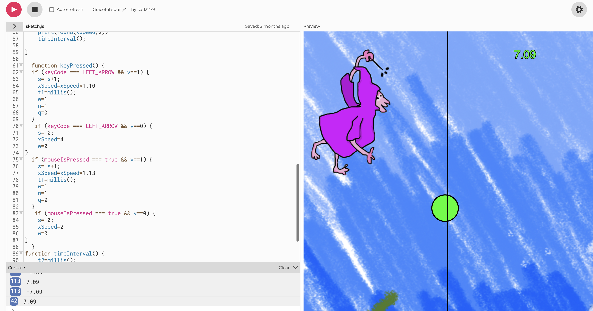
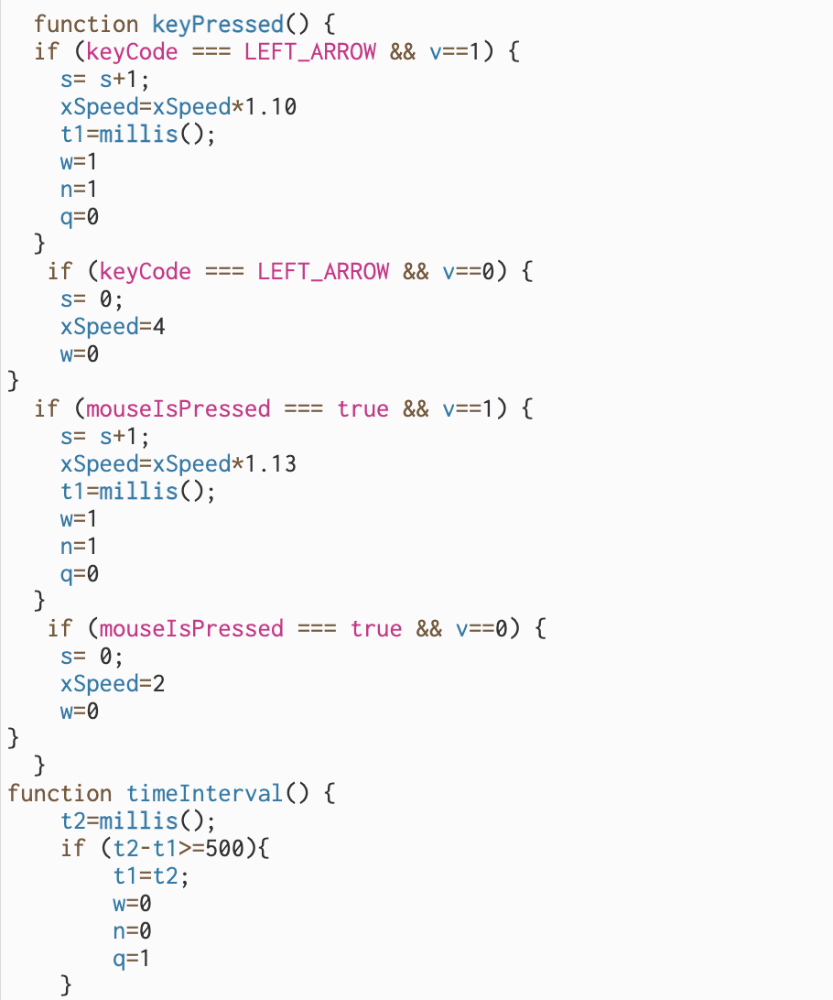

I dette forløb skulle vi konstruere et spil til start, og efterfølgende tilslutte det til det man kalder en "makey-makey", som gør det muligt lave enhver dimsedut til en controller. Forløbets endemål var at kunne inddrage fysisk bevægelse som en funktion i spillet samt at flere folk kunne deltage på samme tid.
Formålet med spillet var, at skabe et spil, der var brugervenligt og nemt at navigere i. Foruden dette ønskede vi også, at det skulle være “let til sjov”, vi ønskede ikke for mange forhindringer eller andet, der vil tage fokus fra et simpelt og sjovt spil. Vi fandt frem til at Trullemannen var den bedste kandidat/ide, og dens simple form gjorde den overskuelig, men ikke desto mindre sjovt og fængende.
Spillet er opbygget således, at man har Trullemannen som den aktive figur. Når den giftige kugle passerer linjen, der opdeler skærmen og man trykker på den venstre piletast, vil Trullemannen kaste sin besværgelse. Besværgelsen kaster et grønt lyn på kuglen og her får Trullemannen sin sande og endelig form, og pointscoren stiger. Hvis man skulle misse et klik på piletasten og ryge ud fra den sorte streg har man tabt, og spillet startes forfra.
Koden definerer en funktion ved navn "draw()", som indeholder en række handlinger, der gentages kontinuerligt, når programmet kører. Først vises et billede (imgB) i øverste venstre hjørne af skærmen, og derefter vises en ellipse på en given x-koordinat (xCoordinat) og med en given størrelse (ellipseX, ellipseY) på bunden af skærmen. xCoordinat ændres derefter med en bestemt hastighed (xSpeed). Derefter vises en tekst på skærmen, der viser hastigheden (abs rundet til to decimaler) på bolden i bevægelse i øverste højre hjørne af skærmen. Herefter følger en række betingede udsagn (if-sætninger), der viser forskellige billeder (imgL, imgN, img) afhængigt af, om de respektive variable (w, n, q) er sat til 1 eller ej. Dernæst er der en betinget udsagn (if-sætning) der tjekker om bolden er nået skærmens kant (1000px). Hvis den er det, ændres hastigheden, og hvis den hidtil længste score (HS) er mindre end den aktuelle score (s), opdateres HS til den aktuelle score. Til sidst tegnes en lodret linje på skærmen, og dens farve og tykkelse sættes ved hjælp af "stroke()" og "strokeWeight()" funktioner. En bestemt farve (rød eller grøn) påfyldes i ellipsen, afhængigt af dens placering i forhold til den lodrette linje, og variablen v sættes tilsvarende til 0 eller 1. Derudover kaldes der også en funktion kaldet "timeInterval()" ved afslutningen af funktionen "draw()"
I denn del af koden ligger den central del af spillet. Koden definerer en funktion ved navn "keyPressed()", som lytter efter brugerinput fra tastaturet eller musen. Hvis brugeren trykker på venstre piletast OG ellipsen er i grøn farve (v=1), så øges variablen "s" med 1 og hastigheden øges med 10% (xSpeed * 1,10). Derudover opdateres "t1" til at registrere det nuværende tidspunkt, og variablerne "w" og "n" sættes til 1 for at vise de tilhørende billeder. Hvis brugeren trykker på venstre piletast, men ellipsen er i rød farve (v=0), så nulstilles variablen "s" til 0, hastigheden sættes til 4, og variablen "w" sættes til 0 for at skjule det tilhørende billede. Hvis brugeren klikker på musen OG ellipsen er i grøn farve (v=1), så øges variablen "s" med 1 og hastigheden øges med 13% (xSpeed * 1,13). Derudover opdateres "t1" til at registrere det nuværende tidspunkt, og variablerne "w" og "n" sættes til 1 for at vise de tilhørende billeder. Hvis brugeren klikker på musen, men ellipsen er i rød farve (v=0), så nulstilles variablen "s" til 0, hastigheden sættes til 2, og variablen "w" sættes til 0 for at skjule det tilhørende billede. Dernæst defineres funktionen "timeInterval()", som tjekker om tiden, der er gået siden t1 blev opdateret, er større end eller lig med 500 millisekunder. Hvis dette er tilfældet, opdateres variablerne "w", "n" og "q" til henholdsvis 0, 0 og 1 for at skjule og vise de tilhørende billeder.
Tilbage til hovedsiden